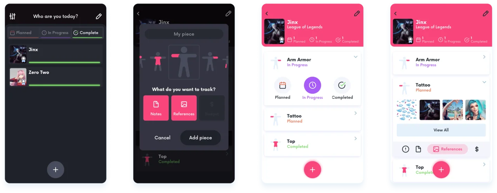

Isuna is a module-based organization tool that helps cosplayers control all aspects of their cosplays, from planning to the final result.
Timely market
At the Apple Developer Academy, we had the chance to develop an application for the iOS platform with the theme, market and team of our choosing. Based on research and meetings, we decided to work with the cosplay market, an activity that
consists of creating clothing focused on characters from series, games, movies, etc.
We observed here the possibility of reaching an audience that spends a large part of their time and money on their creations but does not have any type of product that meets their creative needs. This led us to start an immersion process
that can be summarized in 3 steps:
Face-to-face interviews with cosplayers to find possible needs within the market.
Quantitative forms distributed in national and international communities. This survey was created based on the insights gained during the first interviews and led to a more comprehensive mapping of the market.
Interviews through Discord, Skype and WhatsApp with cosplayers who showed interest in participating through forms. Here we sought to learn more about the problems highlighted in the previous steps. We talked to casual
cosplayers and influencers with more than 10,000 followers on social media.

Modular solution
During immersion, we noticed the amount of different media that our public uses for organizing and planning a cosplay, with several interviewees even adapting non-organizational tools to their needs. We noted here a niche with excellent
opportunities of being successful and sustainable as a service or product.
We started to shape this idea by getting to know the organization process thoroughly and structuring different cosplay creation methods. This, together with benchmarks and conversations directly with our audience, led us to an application
with modules that fit each user's unique need for organization.
The application allows the user to register a cosplay with its essential information and, from that moment onward, choose which module he wants to catalogue. The user could, for example, create a cosplay using only the notes and images
module and exclude the module that focuses on the financial part of the process.
An MVP was planned with the main modules for an initial launch based on the information structure we created alongside cosplayers, in addition to mapping future expansions to meet what our audience considered essential. This enabled the
design of flows and wireframes for app development in a fast and efficient way.

Branding
We started to create the visual identity, essential for the dissemination of the app and the creation of a consistent design system. The cosplay culture guided the entire brand construction and visual identity, mainly the Japanese roots,
due to its tremendous impact on the market:
The Isuna brand emerged as a combination of the words Ishō (costume), Kyōyū Suru (Share) and Kurieitibuna (Creativity). This method of conjunction is typical in the Japanese language
and was the same used for the creation of the expression kosupure, from which the word cosplay originated.
Furthermore, the logo refers to a fox mask, known in Japanese culture by the name Kitsune and as a being that changes its shape.
The Palette was developed with the idea of achieving a colour system for each detail that makes up a cosplay, such as the progression of a piece. And, following market standards, it has a version for light and dark mode.
Since most of the content is generated by the user through names and notes, the typography was chosen with the notion that it would need to accommodate different amounts and styles of text.
One of the characteristics of cosplays is that a large number and variety of people are represented in this activity, which brought about the need for an accessible and comprehensive iconography. To that end, the
application was developed in a way that disabled people and other audiences can be added according to users' demand.
Final result
The last step was the creation of high-fidelity screens and the handoff for development. This entire process was done close to the developers, allowing for easy and hassle-free development, using as much as possible of what the iOS
platform has to offer.

Post-launch and learning
The app was first launched on the Testflight platform for usability testing and feedback from other academy members, to correct or add essential functionality for a successful launch. Besides, the application was disseminated at events
related to the cosplay area to acquire interest and contacts for future distribution.
After the launch, the focus shifted to bug fixing and improving the base product for the community. Implementation of analytics and firebase helped immensely in this process, in addition to new conversations with influencers and our
audience. Since the cosplay community is a united one, staying in contact with these individuals was of the utmost importance.
Throughout the entire process of designing Isuna, learning to create a practical MVP was a significant challenge that we managed to overcome. This resulted in a consistent and smooth to maintain product due to the modular nature of the
project.
Plus, leading a team from the initial conception to the end produced incredible learning about the process of creating and monitoring a product. The opportunity to conduct interviews on an international level, in particular, has broadened
my perspective of a product with worldwide possibilities.
Thank you
for taking the time to delve into my work
Isuna will always be an influential project for my career as a designer, allowing contact with a remarkably welcoming and proactive audience. Isuna is currently on the App Store, and we hope to bring more updates in the future.
Check my other works:
Hubster
Design system for a SaaS platform
Before, there was Ava
Story-rich game about friends, self-discovery and a sinister truth
Hubster allowed me to work with two different components that make up a successful platform: the internal organization through a design system and the acquisition of new users.
Aggravating problem
Despite having a visual identity, the internal decentralization of these elements caused difficulties in the production of new features and screens.
As a product designer, my goal was to bring an efficient method of organization and documentation into the platform, in other words, a Design System. I also worked on introducing new elements as needed and assessing the success of new implementations both inside and outside the company.
Atomic organization
The first step was to find a method of organization that would document existing content clearly and serve as a basis for future additions. This is a crucial step for admitting the system within the company since a design system does not reach its true potential without being understood and influenced by all product stakeholders.
After benchmarks and studies regarding different options, I decided to use the atomic method of organization. This method is based on dividing the screens into smaller and smaller components until reaching the minimum base, such as individual text fields or buttons. The atomic model makes it possible to easily update several product features by modifying only a few base components.
I conducted tests to find out what would be the best type of terminology and workflow, considering the profile of each team within Hubster. Although the atomic model serves as an important basis, a design system really shows its potential when the company takes ownership and modifies it to create a comfortable and efficient relationship between the squads and the product they develop. The design system should be something natural and not an obligation.
Design system
The design system started with the development and presentation of Key Visuals with the changes implemented - revised colour palette, typography and iconography - for the team. Due to the disorder of interface components, certain elements did not dialogue and impaired the platform's consistency and usability.
Finally, with the details aligned and Key Visuals approved, I was able to start working on the organization and standardization of components. Following the grids and layouts presented, I tried to achieve greater consistency within the interface, making changes and introducing new elements where necessary.
Applications and results
After implementing the design system, I had the opportunity to work on the organization of acquisition processes. This project went far beyond just the design system, also involving studies of how customer acquisition and service within the company worked and where they could be improved, both internally and externally.
With the mapping created, I was responsible for applying the design system to a new version of the homepage to reduce the bounce rate, generate new leads and make the experience of knowing the Hubster brand more pleasant.
I also followed up with other designers on the team to check the implementation of the new organization, thus speeding up the creation of high-fidelity prototypes.
Thank you
for taking the time to delve into my work
Hubster allowed me to apply my knowledge in an area of personal interest, which is the creation and maintenance of a design system. It was a great challenge, and I am delighted with the results, which are still applied in the company nowadays.
Check my other works:
Isuna
Organizational app focused on the cosplay market
Before, there was Ava
Story-rich game about friends, self-discovery and a sinister truth
Roles Game Designer, UI/UX Designer and Unity/C# Developer
Rachel Sarra
Roles Game Designer, UX/UI Designer and Narrative Designer
Monique Alencar
Roles Concept, Character and Level Artist
São Paulo, Brazil
2020
Guilherme Fidélio
I am a product designer focused on visual representations and the power they exercise in the user experience. I bring design process knowledge, research and UX to create experiences that are not
only
aesthetically pleasing, but
that talk to the user and make their daily lives more comfortable